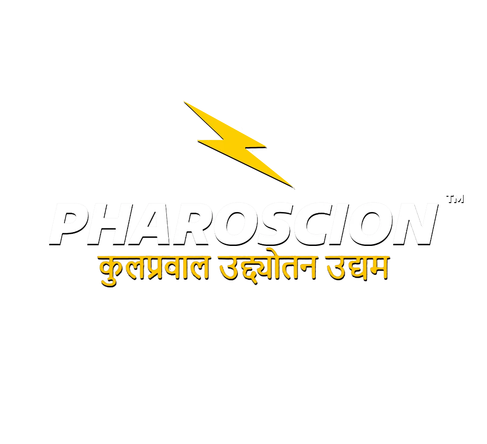
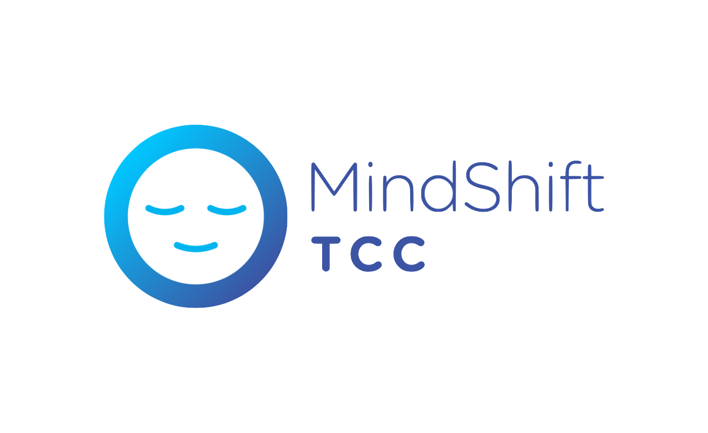
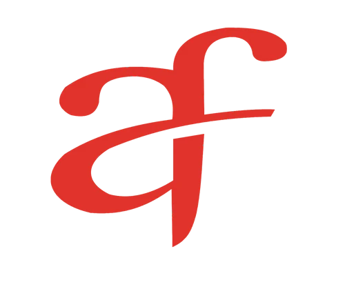
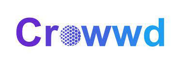

We regularly engage in consulting, analytics, and product management projects with startups, corporates, and non-profits. Interested in collaborating? Contact us!
IDEATE. STRATEGIZE. ANALYSE.
Driven by passion and purpose, we cultivate the next generation of business leaders across Consulting, Product Management, and Analytics at IIT Roorkee.
0
STARTUPS INCUBATED
0
PROJECTS DELIVERED
0
COMPETITION WINS
Our Projects
International shopping platform. SocBiz members contributed to marketing strategy, user engagement, and product improvement, helping the startup expand its reach and optimize user experience.
AI-first InsurTech for India. Our team worked on product management, user research, and go-to-market strategy for this innovative insurance platform.

Collaborated with global companies on decarbonization trends, organizational analysis, and market evaluation, providing actionable insights for business transformation.
Criminal Investigation Automation
Partnered with academic and industry experts to leverage data and automation for real-world applications in criminal investigation and public safety.
What Our Collaborators Say

“The team’s enthusiasm, sharp thinking, and knack for turning ideas into practical solutions really stood out. They brought in a fresh perspective, blending solid analysis with real-world relevance. It’s great to see such dedication and professionalism, and we're looking forward to seeing the kind of impact they create in the business and analytics space”

“Bringing SocBiz members into Mindshift Analytics was refreshing. Their ability to connect data and real operations helped us sharpen our analytics dashboards and workflows. They didn’t just code, they asked why it mattered, and adjusted designs accordingly. Working with them made data feel alive.”

“Working with SocBiz at Actofit has been a real boost. They dove into our wellness platform with fresh energy, helping us think through user flows that connect wearables, coaching, and personalized plans. Their thoughtful approach kept ideas grounded in real usage and kept tech and empathy in sync. ”
“They jump in, build with empathy, and make ideas happen, making collaboration feel natural. We're excited to see how this kind of hands-on, real-world thinking continues to shape platforms like ours.”

“They don’t just think creatively, they act on it, helping build features that connect users meaningfully. Collaborating with them has been seamless and inspiring,we’re looking forward to seeing where they take the concept of community next.”
Featured Events
Achievements & Legacy
🏆 Winners at Inter-IIT Tech Meet
- Gold Medal in Consult and Analytics Challenge, Silver in Product Case Challenge (2023).
- Bronze Medal in Consult (2018 & 2022).
- Bronze Medal in Product Case Challenge (2021).
🏆 National Finalists: KPMG Ideation Challenge (2022).
🏆 Gold Medal in Analytics Datathon, NIUA.
🏆 Winners in Global Case Competition in Consult (2023).
🏆 Hosted flagship events like Business Baazigar & Pan India Case Competition with 3,000+ participants.
🤝 Collaborative research projects including automation for criminal investigation & decarbonization trends with global companies.